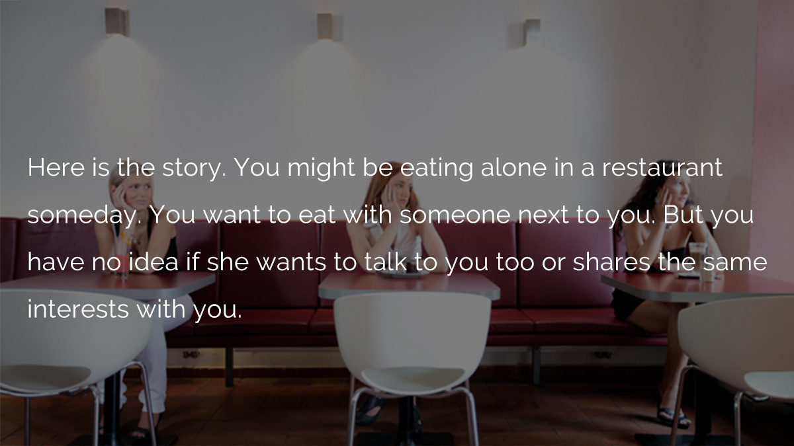

Eating Together
App Design | Interaction Design
Eating Together is an iPhone application aiming to help busy and introvert individuals to improve their social life quality by having lunch/dinner with someone they don’t know. Through research, I found out that there are considerable people who don’t want to eat alone. Rather, they prefer to talk to others who share the same interests, even though they don’t know each other. However, there is not an effective way to do such things. People have no idea of how to find out their eating partners. In this sense, Eating Together helps them to make the process easier.
Online Survey and User Interview
To start with, I designed an online survey and collected data from 127 participants by convenience sampling. I then conducted interviews by convenience sampling with 7 introvert people who want to expand their social network, talking about their experience of eating out. During the interview, I focused on understanding the difficulties they had when they ate along and their attitude towards looking for eating partners.

Users' Requirements
We find some interting things from users' feedback.

Who is going to use Eating Together?
We came up with two major personas according to the users' requirements.

How do people use Eating Together?
I created a storyboard to show how the charactor uses Eating Together to choose his eating partner and restaurant.

What's the structure of Eating Together?
I draw the task flow of Eating Together to figure out the struction of it.

Hign Fidelity UI Mockups
I created seven UI for Eating Together including a) group list b) filter c) creating new page d) profile and etc.